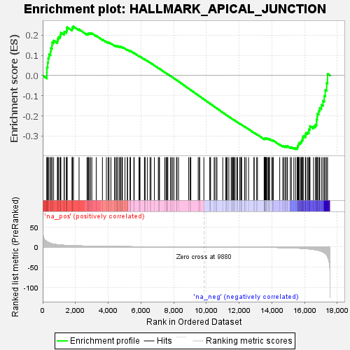
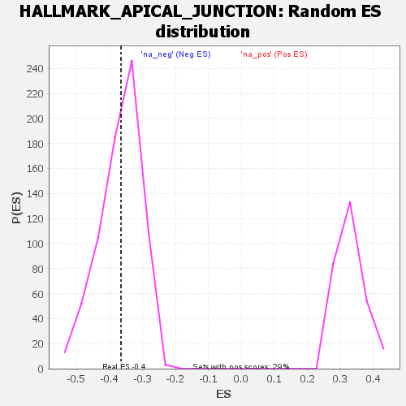

| | | Dataset | tcga_raw_counts.Tumor.vs.Normal.DESeq2_results_report_rankbyabsstat |
| Phenotype | NoPhenotypeAvailable |
| Upregulated in class | na_neg |
| GeneSet | HALLMARK_APICAL_JUNCTION |
| Enrichment Score (ES) | -0.36553448 |
| Normalized Enrichment Score (NES) | -0.9935412 |
| Nominal p-value | 0.46563816 |
| FDR q-value | 0.7514488 |
| FWER p-Value | 1.0 |
Table: GSEA Results Summary

Fig 1: Enrichment plot: HALLMARK_APICAL_JUNCTION
Profile of the Running ES Score & Positions of GeneSet Members on the Rank Ordered List
| SYMBOL | RANK IN GENE LIST | RANK METRIC SCORE | RUNNING ES | CORE ENRICHMENT | | 1 | ATP1A3 | 254 | 13.623 | 0.0132 | No |
| 2 | MMP9 | 258 | 13.473 | 0.0405 | No |
| 3 | PPP2R2C | 305 | 12.425 | 0.0632 | No |
| 4 | NRTN | 333 | 11.725 | 0.0856 | No |
| 5 | CDH11 | 384 | 10.793 | 0.1048 | No |
| 6 | CDSN | 476 | 9.387 | 0.1187 | No |
| 7 | SHROOM2 | 503 | 8.890 | 0.1353 | No |
| 8 | VCAN | 569 | 8.055 | 0.1480 | No |
| 9 | KCNH2 | 575 | 7.963 | 0.1640 | No |
| 10 | CD276 | 668 | 7.082 | 0.1732 | No |
| 11 | ACTN2 | 898 | 5.734 | 0.1717 | No |
| 12 | CLDN14 | 925 | 5.586 | 0.1816 | No |
| 13 | MAPK13 | 968 | 5.382 | 0.1902 | No |
| 14 | GRB7 | 1062 | 5.034 | 0.1951 | No |
| 15 | SRC | 1085 | 4.952 | 0.2039 | No |
| 16 | KRT31 | 1110 | 4.845 | 0.2124 | No |
| 17 | CERCAM | 1308 | 4.202 | 0.2097 | No |
| 18 | CDH15 | 1320 | 4.181 | 0.2176 | No |
| 19 | FSCN1 | 1444 | 3.896 | 0.2185 | No |
| 20 | VAV2 | 1478 | 3.836 | 0.2244 | No |
| 21 | DMP1 | 1483 | 3.827 | 0.2320 | No |
| 22 | CLDN4 | 1491 | 3.808 | 0.2393 | No |
| 23 | TUBG1 | 1791 | 3.234 | 0.2287 | No |
| 24 | JUP | 1814 | 3.203 | 0.2340 | No |
| 25 | MDK | 1822 | 3.191 | 0.2401 | No |
| 26 | RHOF | 1881 | 3.090 | 0.2431 | No |
| 27 | CLDN7 | 2223 | 2.654 | 0.2289 | No |
| 28 | CRB3 | 2710 | 2.154 | 0.2053 | No |
| 29 | ACTB | 2748 | 2.104 | 0.2075 | No |
| 30 | THY1 | 2812 | 2.053 | 0.2080 | No |
| 31 | ACTG1 | 2844 | 2.023 | 0.2104 | No |
| 32 | PFN1 | 2931 | 1.945 | 0.2094 | No |
| 33 | SHC1 | 3004 | 1.893 | 0.2091 | No |
| 34 | ICAM5 | 3271 | 1.687 | 0.1973 | No |
| 35 | BAIAP2 | 3650 | 1.447 | 0.1784 | No |
| 36 | PTK2 | 3894 | 1.314 | 0.1671 | No |
| 37 | SYMPK | 3997 | 1.258 | 0.1638 | No |
| 38 | CDK8 | 4056 | 1.226 | 0.1630 | No |
| 39 | WNK4 | 4171 | 1.171 | 0.1588 | No |
| 40 | NRXN2 | 4386 | 1.069 | 0.1487 | No |
| 41 | SLC30A3 | 4457 | 1.036 | 0.1468 | No |
| 42 | YWHAH | 4543 | 0.996 | 0.1439 | No |
| 43 | ADAM15 | 4548 | 0.994 | 0.1457 | No |
| 44 | CDH1 | 4551 | 0.994 | 0.1476 | No |
| 45 | PARD6G | 4662 | 0.950 | 0.1433 | No |
| 46 | WASL | 4704 | 0.938 | 0.1428 | No |
| 47 | B4GALT1 | 4772 | 0.905 | 0.1408 | No |
| 48 | HRAS | 4779 | 0.903 | 0.1423 | No |
| 49 | VASP | 4853 | 0.886 | 0.1399 | No |
| 50 | NF2 | 4873 | 0.878 | 0.1406 | No |
| 51 | CDH3 | 5028 | 0.823 | 0.1334 | No |
| 52 | TGFBI | 5171 | 0.771 | 0.1268 | No |
| 53 | COL16A1 | 5188 | 0.766 | 0.1275 | No |
| 54 | ICAM1 | 5335 | 0.722 | 0.1205 | No |
| 55 | MAP4K2 | 5365 | 0.711 | 0.1203 | No |
| 56 | RAC2 | 5369 | 0.711 | 0.1216 | No |
| 57 | ACTN4 | 5571 | 0.640 | 0.1113 | No |
| 58 | NLGN2 | 5593 | 0.632 | 0.1114 | No |
| 59 | CAP1 | 5885 | 0.542 | 0.0958 | No |
| 60 | PIK3R3 | 5923 | 0.529 | 0.0947 | No |
| 61 | TIAL1 | 5948 | 0.524 | 0.0944 | No |
| 62 | ARPC2 | 6218 | 0.451 | 0.0798 | No |
| 63 | RSU1 | 6242 | 0.445 | 0.0794 | No |
| 64 | DHX16 | 6256 | 0.441 | 0.0796 | No |
| 65 | BMP1 | 6393 | 0.409 | 0.0726 | No |
| 66 | PBX2 | 6558 | 0.365 | 0.0639 | No |
| 67 | GTF2F1 | 6620 | 0.348 | 0.0611 | No |
| 68 | MPZL1 | 6826 | 0.307 | 0.0499 | No |
| 69 | MYH9 | 7065 | 0.259 | 0.0368 | No |
| 70 | ITGB4 | 7114 | 0.250 | 0.0345 | No |
| 71 | CD86 | 7139 | 0.246 | 0.0336 | No |
| 72 | STX4 | 7462 | 0.189 | 0.0155 | No |
| 73 | LAYN | 7538 | 0.177 | 0.0115 | No |
| 74 | INPPL1 | 7592 | 0.170 | 0.0088 | No |
| 75 | ZYX | 7602 | 0.168 | 0.0086 | No |
| 76 | MPZL2 | 7649 | 0.159 | 0.0063 | No |
| 77 | MYL12B | 7819 | 0.135 | -0.0031 | No |
| 78 | CNN2 | 7859 | 0.130 | -0.0051 | No |
| 79 | ACTN1 | 7944 | 0.118 | -0.0097 | No |
| 80 | NF1 | 8024 | 0.108 | -0.0140 | No |
| 81 | TRAF1 | 8175 | 0.091 | -0.0225 | No |
| 82 | PIK3CB | 8208 | 0.087 | -0.0241 | No |
| 83 | EXOC4 | 8301 | 0.078 | -0.0293 | No |
| 84 | SYK | 8921 | 0.030 | -0.0648 | No |
| 85 | CTNND1 | 9008 | 0.025 | -0.0697 | No |
| 86 | MMP2 | 9054 | 0.022 | -0.0723 | No |
| 87 | ITGA2 | 9502 | 0.005 | -0.0980 | No |
| 88 | ITGA3 | 9584 | 0.003 | -0.1027 | No |
| 89 | CNTN1 | 9593 | 0.003 | -0.1031 | No |
| 90 | NFASC | 9850 | 0.000 | -0.1178 | No |
| 91 | TMEM8B | 10214 | -0.005 | -0.1387 | No |
| 92 | THBS3 | 10227 | -0.005 | -0.1394 | No |
| 93 | GAMT | 10260 | -0.006 | -0.1412 | No |
| 94 | TAOK2 | 10479 | -0.013 | -0.1538 | No |
| 95 | MSN | 10532 | -0.015 | -0.1567 | No |
| 96 | ICAM4 | 10637 | -0.021 | -0.1627 | No |
| 97 | PLCG1 | 10641 | -0.021 | -0.1628 | No |
| 98 | CTNNA1 | 11005 | -0.051 | -0.1836 | No |
| 99 | NRAP | 11190 | -0.073 | -0.1940 | No |
| 100 | LDLRAP1 | 11225 | -0.076 | -0.1958 | No |
| 101 | PCDH1 | 11283 | -0.082 | -0.1989 | No |
| 102 | PTPRC | 11377 | -0.093 | -0.2041 | No |
| 103 | SORBS3 | 11518 | -0.109 | -0.2119 | No |
| 104 | ADAM9 | 11581 | -0.118 | -0.2153 | No |
| 105 | AMIGO2 | 11625 | -0.124 | -0.2175 | No |
| 106 | MAPK14 | 11658 | -0.129 | -0.2191 | No |
| 107 | IKBKG | 11715 | -0.139 | -0.2220 | No |
| 108 | VCAM1 | 11756 | -0.146 | -0.2240 | No |
| 109 | NLGN3 | 11862 | -0.163 | -0.2297 | No |
| 110 | CRAT | 11911 | -0.174 | -0.2321 | No |
| 111 | AKT2 | 12051 | -0.198 | -0.2397 | No |
| 112 | AMH | 12056 | -0.199 | -0.2395 | No |
| 113 | AKT3 | 12127 | -0.213 | -0.2431 | No |
| 114 | SPEG | 12139 | -0.215 | -0.2433 | No |
| 115 | DLG1 | 12156 | -0.217 | -0.2438 | No |
| 116 | CD99 | 12344 | -0.262 | -0.2540 | No |
| 117 | LAMB3 | 12346 | -0.263 | -0.2536 | No |
| 118 | ACTN3 | 12432 | -0.281 | -0.2579 | No |
| 119 | SDC3 | 12581 | -0.318 | -0.2657 | No |
| 120 | INSIG1 | 12910 | -0.419 | -0.2838 | No |
| 121 | CD274 | 12922 | -0.421 | -0.2835 | No |
| 122 | CX3CL1 | 13078 | -0.478 | -0.2915 | No |
| 123 | RASA1 | 13127 | -0.496 | -0.2932 | No |
| 124 | CALB2 | 13533 | -0.685 | -0.3151 | No |
| 125 | MVD | 13548 | -0.696 | -0.3145 | No |
| 126 | CDH6 | 13553 | -0.698 | -0.3133 | No |
| 127 | CDH8 | 13563 | -0.706 | -0.3124 | No |
| 128 | DSC3 | 13584 | -0.719 | -0.3121 | No |
| 129 | TNFRSF11B | 13600 | -0.727 | -0.3115 | No |
| 130 | CLDN15 | 13627 | -0.738 | -0.3115 | No |
| 131 | ADAM23 | 13672 | -0.759 | -0.3124 | No |
| 132 | ITGB1 | 13681 | -0.763 | -0.3113 | No |
| 133 | CLDN18 | 13733 | -0.790 | -0.3127 | No |
| 134 | GNAI2 | 13792 | -0.815 | -0.3143 | No |
| 135 | TJP1 | 13836 | -0.835 | -0.3151 | No |
| 136 | JAM3 | 13862 | -0.850 | -0.3148 | No |
| 137 | MYH10 | 14002 | -0.917 | -0.3210 | No |
| 138 | FLNC | 14040 | -0.943 | -0.3212 | No |
| 139 | CLDN8 | 14094 | -0.987 | -0.3222 | No |
| 140 | ITGA10 | 14486 | -1.265 | -0.3421 | No |
| 141 | ACTG2 | 14671 | -1.427 | -0.3498 | No |
| 142 | ITGA9 | 14741 | -1.494 | -0.3507 | No |
| 143 | IRS1 | 14826 | -1.580 | -0.3523 | No |
| 144 | VCL | 14837 | -1.592 | -0.3496 | No |
| 145 | PTEN | 14930 | -1.686 | -0.3515 | No |
| 146 | LAMC2 | 14961 | -1.729 | -0.3497 | No |
| 147 | AMIGO1 | 15132 | -1.936 | -0.3555 | No |
| 148 | TRO | 15199 | -2.042 | -0.3552 | No |
| 149 | ACTA1 | 15348 | -2.293 | -0.3590 | No |
| 150 | SIRPA | 15452 | -2.466 | -0.3599 | No |
| 151 | FBN1 | 15551 | -2.653 | -0.3601 | Yes |
| 152 | SLIT2 | 15572 | -2.676 | -0.3558 | Yes |
| 153 | SGCE | 15592 | -2.708 | -0.3514 | Yes |
| 154 | CDH4 | 15606 | -2.743 | -0.3465 | Yes |
| 155 | TSC1 | 15630 | -2.784 | -0.3422 | Yes |
| 156 | COL17A1 | 15653 | -2.815 | -0.3377 | Yes |
| 157 | PKD1 | 15679 | -2.880 | -0.3332 | Yes |
| 158 | ACTC1 | 15768 | -3.081 | -0.3320 | Yes |
| 159 | SKAP2 | 15805 | -3.170 | -0.3276 | Yes |
| 160 | MAPK11 | 15827 | -3.229 | -0.3222 | Yes |
| 161 | RRAS | 15881 | -3.351 | -0.3184 | Yes |
| 162 | DSC1 | 15888 | -3.375 | -0.3119 | Yes |
| 163 | LIMA1 | 15900 | -3.418 | -0.3056 | Yes |
| 164 | MYL9 | 15920 | -3.466 | -0.2996 | Yes |
| 165 | CLDN19 | 16052 | -3.884 | -0.2992 | Yes |
| 166 | LAMA3 | 16064 | -3.917 | -0.2918 | Yes |
| 167 | PARVA | 16083 | -3.972 | -0.2848 | Yes |
| 168 | ARHGEF6 | 16188 | -4.386 | -0.2818 | Yes |
| 169 | ADRA1B | 16261 | -4.670 | -0.2764 | Yes |
| 170 | PDZD3 | 16265 | -4.697 | -0.2670 | Yes |
| 171 | NEXN | 16327 | -4.891 | -0.2605 | Yes |
| 172 | TSPAN4 | 16331 | -4.898 | -0.2507 | Yes |
| 173 | CLDN11 | 16552 | -6.045 | -0.2510 | Yes |
| 174 | CADM2 | 16669 | -6.833 | -0.2437 | Yes |
| 175 | NEGR1 | 16734 | -7.314 | -0.2325 | Yes |
| 176 | EGFR | 16737 | -7.332 | -0.2176 | Yes |
| 177 | EPB41L2 | 16775 | -7.650 | -0.2041 | Yes |
| 178 | ICAM2 | 16787 | -7.731 | -0.1890 | Yes |
| 179 | HADH | 16873 | -8.461 | -0.1766 | Yes |
| 180 | VWF | 16922 | -9.022 | -0.1610 | Yes |
| 181 | CADM3 | 17031 | -10.796 | -0.1451 | Yes |
| 182 | CD34 | 17125 | -12.431 | -0.1251 | Yes |
| 183 | GNAI1 | 17208 | -14.255 | -0.1007 | Yes |
| 184 | CLDN5 | 17268 | -16.025 | -0.0714 | Yes |
| 185 | CD209 | 17354 | -19.514 | -0.0365 | Yes |
| 186 | ADAMTS5 | 17409 | -23.654 | 0.0087 | Yes |
Table: GSEA details [plain text format]

Fig 2: HALLMARK_APICAL_JUNCTION: Random ES distribution
Gene set null distribution of ES for HALLMARK_APICAL_JUNCTION